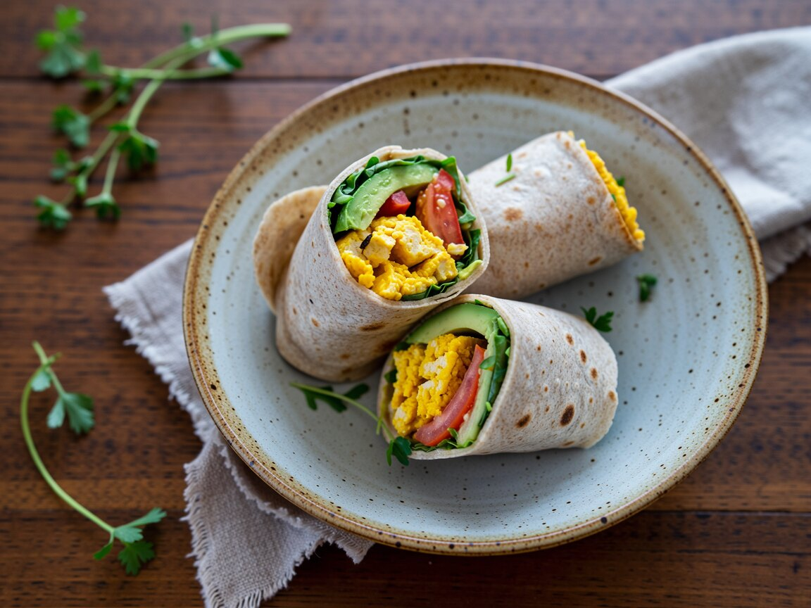

Rührtofu-Wraps mit Avocado
Frühstück, Abendessen oder Zugproviant.
Zutaten
- 200 g Naturtofu
- 4 Weizentortillas
- 1 Avocado
- 1 Tomate
- 1 Handvoll Rucola
- 2 EL Hummus
- 1 EL Hefeflocken
- ½ TL Kurkuma
- Kala Namak oder Salz
- Pfeffer, Chiliflocken
So geht's
- Tofu mit den Händen in die Pfanne krümeln und in Öl 5 Minuten braten.
- Kurkuma, Hefeflocken, Kala Namak und 2 EL Wasser unterrühren, noch 2 Minuten braten.
- Tortillas kurz in der trockenen Pfanne erwärmen und mit Hummus bestreichen.
- Rührtofu, Avocado, Tomate und Rucola darauf verteilen und fest einrollen.
Einen Wrap fest in Butterbrotpapier wickeln und halbieren, so hält er bis zur Mittagspause. Die Avocado mit etwas Zitrone beträufeln.